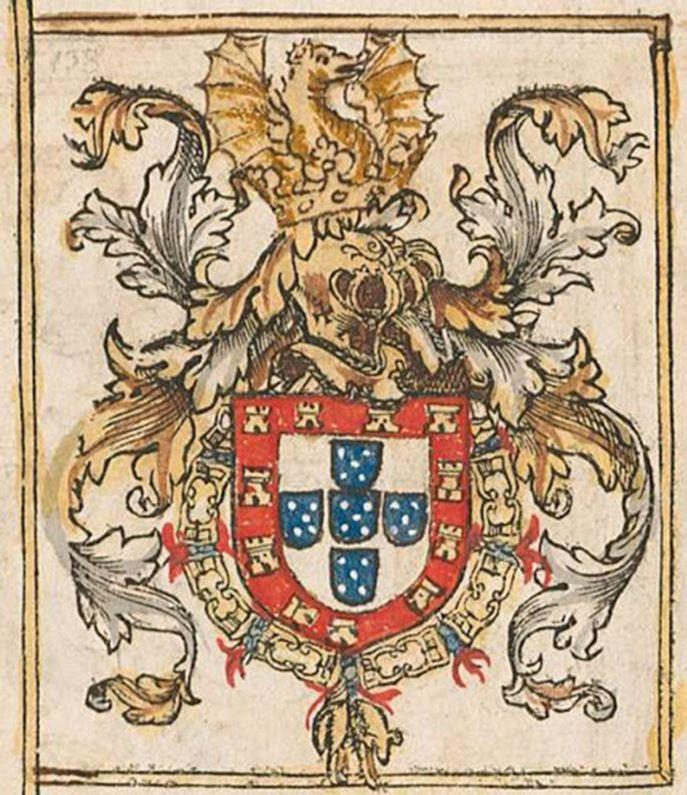

L'idée d'Empire domine l'œuvre diverse de Fernando Pessoa. Le désir d'embrasser la multiplicité, de ressaisir les innombrables aspects de l'âme, d'être, enfin soi-même, le masque de toute vie et de toute chose, de s'en approprier l'essence par les communions et les ruses du personnage,- tout cela témoigne d'un dessein littéraire qui commence avant la page écrite et s'achève après elle, en des œuvres vives, ardentes et impressenties, que l'on peut dire philosophales. De l'Alchimie et, d'une manière plus générale, de la tradition hermétique et néoplatonicienne occultée par le triomphe des théories matérialistes, les poètes demeurent, en Europe, les ultimes ambassadeurs. L'œuvre de Pessoa ne fait pas exception à cette règle méconnue qui associe la grandeur poétique, l'audace visionnaire et la fidélité à la plus lointaine tradition.
Alors que la science profane travaille par déductions sur le mécanisme et les quantités du monde sensible, la science hermétique œuvre, par l'analogie, au sacrement des qualités et des essences.
L'une s'interroge sur le comment, l'autre donne réponse au pourquoi. La différence est capitale, et ce n'est pas le hasard si tant de poètes modernes, enclins à la spéculation, retrouvèrent, dans la tradition hermétique, les grandes lignes de leur dessein poétique.
« Avec l'aide et l'assistance de Dieu, écrivit Pic de la Mirandole, l'Alchimie met en lumière toutes les énergies cachées de par le vaste monde. Comme le vigneron greffe le cep sur l'orme et sur l'espalier, le mage, l'Alchimiste sait unir et pour ainsi dire marier terre et ciel, énergies inférieures et énergies supérieures ». Cette coïncidence des contraires, qui dépasse également l'opposition philosophique du réalisme et du nominalisme, il est facile de comprendre en quoi elle séduisit Fernando Pessoa. La hiérogamie cosmique, le dépassement du dualisme en des noces miroitantes, impériales, apparente ici la nostalgie de la conquête et le pressentiment des retrouvailles, la poésie et l'Empire. Par le Grand-Œuvre solaire, le regret de l'Age d'Or devient l'annonce du Retour, l'adepte se substituant au temps, et disposant du pouvoir de transfigurer la nature :« L'eau céleste et indestructible, écrit Bernard Gorceix, le feu intangible de l'empyrée, se trouvent finalement unis, par le ciel cristallin, par la sphère des astres, par la flore, la faune, par les pierres et les mines, à l'eau corporelle, lentement distillée et volatilisée, pour l'édification de ces cieux nouveaux et de cette terre nouvelle dont rêve l'Alchimiste. » Il ne s'agit donc pas seulement de repérer dans les poèmes de Pessoa des images alchimiques mais bien de montrer que le principe de l'œuvre, en ses ramifications hétéronymiques, s'identifie à la genèse et à l'accomplissement d'un secret d'or impérial, « identique à l'or de la nature, non seulement comme effet mais aussi comme cause ».
« De même, écrit Pessoa, que l'intelligence dialectique, que l'on nomme raison, régente et ordonne tous les éléments de la connaissance scientifique, de même, l'intelligence analogique, qui n'a aucun nom particulier, régente et ordonne tous les éléments de la connaissance ésotérique. La perfection de l'œuvre matérielle est un tout parfaitement constitué, dans lequel chaque partie a sa place et concourt selon son mode et son grade à la formation de ce tout ; la perfection de l'œuvre spirituelle est l'exacte correspondance entre l'intérieur et l'extérieur, entre l'âme et le corps. » Le Grand-Œuvre consiste alors à trouver, dans le temps, par la science analogique des astres et de la lumière, l'angle prophétique s'ouvrant sur l'au-delà du temps, qui est le cœur du temps, tel l'instant, île de cristal se tenant immobile dans la déroute universelle, sous la voûte ordonnatrice du graal-miroir.
Ainsi, par fidélité au dieu dorique de la lumière, l'alchimiste défie le règne de Kronos, afin de vaincre la durée profane et l'histoire elle-même, par le sens semblable à une lance de feu qui l'interrompt et la transcende pour la très-grande gloire de l'Esprit dont il est dit dans L'Apocalypse d'Hermès (traité anonyme du dix-septième siècle) : « Il vole vers le ciel par le monde intermédiaire. Nuage qui monte vers l'aurore, il introduit dans l'eau son feu qui brûle, dans le ciel il a sa terre clarifiée. »
Sans doute sommes-nous fondés à voir dans l'intelligence analogique qui, précise Pessoa, « n'a aucun nom particulier » une exigence de la poésie en tant que moyen de connaissance et imagination créatrice, pour reprendre l'expression rendue célèbre par les magistrales études de Henry Corbin sur Ibn'Arabi, Sohravardî ou Ruzbehân de Shîraz. L'imagination créatrice, on le sait, est cet espace médiateur entre le sensible et l'intelligible, entre la multiple splendeur du monde sensible et l'unificente clarté des Idées, où s'inscrivent les signes, les Symboles, les silhouettes ou les icônes de la sagesse divine. Car l'Idée est avant tout une chose vue dans le matin profond et les promesses de l'intelligence « qui n'a encore aucun nom particulier »; elle advient comme un scintillement sur la surface des eaux, comme une vision que l'on reconnaît, l'expérience visionnaire n'étant rien d'autre que le moment de la plus haute intensité, dans l'épopée de la réminiscence.
A l'exemple des poète-philosophes néoplatoniciens, tels que Jamblique ou l'Empereur Julien, Fernando Pessoa ne juge pas exclusives l'une de l'autre la réflexion philosophique et l'expérience visionnaire. Tout au contraire, il entreprend d'éclairer l'une par l'autre afin de retrouver, en amont, l'expérience originelle de la pensée, l'ingénuité primitive de l'accord parfait, d'une sagesse qui, dans sa plénitude, renonce à s'affirmer pour telle : « Lorsque viendra le Printemps, écrit Alberto Caiero, si je suis déjà mort, les fleurs fleuriront de la même façon, et les arbres ne seront pas moins verts qu'au Printemps passé. »
De l'arbre généalogique des hétéronymes de Fernando Pessoa, Alberto Caiero serait en quelque sorte le tronc.
De lui se réclament l'érudit et subtil Ricardo Reis et le sauvage et futuriste Alvaro de Campos. D'Alberto Caeiro à Alvaro de Campos, la distance est la même que celle qui sépare Héraclite et Proclus, le pré-socratique et le néoplatonicien,- le « découvreur de la nature » et le chantre de la violence « ultimiste », gnostique païen aspirant sans doute à la même « innocence des sens », pour reprendre l'expression de Nietzsche, mais devant, pour l'atteindre, passer par toutes les outrances de la révolte, de l'imprécation et de l'apostasie. En ce sens Alvaro de Campos est plus proche de nous. Son inquiétude et son tumulte sont davantage à notre ressemblance que la sérénité de Caiero, infiniment désirée mais perdue comme sont perdus pour nous, « affreusement perdus », l'Age d'Or dont parlait Hésiode et la silencieuse enfance, et l'Empire, cet idéal androgyne.
L'Idée d'Empire, en ouvrant une troisième voie entre l'isolement égotiste et le nivellement collectif, ressuscite aussi une certaine forme d'espoir « méta-politique ». Diversité ordonnée, hiérarchie au sens étymologique du terme, fondant le principe de l'Autorité sur le sacré et non plus sur le pouvoir temporel, l'Empire dont rêve Pessoa est à la ressemblance du beau cosmos miroitant, de cette « terre clarifiée ». Obscurcie par ses parodies successives, l'Idée d'Empire est devenue aujourd'hui presque incompréhensible. « Tout Empire qui n'est pas fondé sur un impérialisme spirituel est un cadavre régnant, une mort sur un trône » écrit Fernando Pessoa. Il importe ici de retrouver le sens du discernement et ne plus confondre totalité et totalitarisme, unité et uniformité, autorité et pouvoir, gloire et réussite, métaphysique et idéologie, intransigeance et fanatisme, principes et valeurs.
Alors que les valeurs et les idéologies concernent, selon la formule de Raymond Abellio « l'espèce humaine en tant qu'espèce, dans son ensemble ou ses sous-ensembles », les principes concernent l'être humain dans sa solitude et dans sa communion. Les valeurs relèvent d'une appartenance grégaire et utilitaire. Les principes obéissent à l'unique souveraineté de l'Esprit et témoignent d'une vocation héroïque, ascétique, ludique ou contemplative : « En créant notre propre civilisation spirituelle, écrit Pessoa, nous subjuguerons tous les peuples; car il n'y a pas de résistance possible contre les forces de l'Esprit et des arts, surtout lorsqu'ils sont organisés, fortifiés par des âmes de généraux de l'Esprit. »
Comment définir exactement cet impérialisme ? Pessoa propose la formule: « Un impérialisme de poètes ». En effet, écrit-il, « l'impérialisme des poètes dure et domine ; celui des politiciens passe et s'oublie s'il n'est rappelé par le chant des poètes. » L'avenir du Portugal, et, par voie de conséquence, de l'Europe, sortie enfin de la pénombre de son activisme somnambulique, est déjà écrit pour qui sait lire dans les strophes de Bandarra. Cet avenir, explique Pessoa, c'est d'être tout : « Ne tolérons pas qu'un seul dieu reste à l'extérieur de nous-mêmes. Absorbons tous les dieux ! Nous avons déjà conquis la Mer ; il ne nous reste qu'à conquérir le Ciel en laissant la Terre aux autres... Être tout, de toutes les manières, parce que la vérité ne peut exister dans la carence. Créons ainsi le Paganisme Supérieur, le Polythéïsme Suprême ! »
La rimbaldienne « alchimie du Verbe » la quête de « l'étincelle d'or de la lumière nature » s'anime ainsi d'une impérieuse exigence d'étendre le domaine du Sens. Vasco de Gamma des mers et des cieux intérieur, Pessoa ne cherche point à se perdre dans les abysses de l'indéterminé ou de l'absurde, mais de conquérir. En son dessein cosmogonique et impérial, il suit l'orientation du Soleil-Logos. De même que Sohravardî voulut réactualiser la sagesse zoroastrienne de l'ancienne Perse tout en demeurant fidèle à la plus subtile herméneutique abrahamique, Pessoa nous promet le retour de Dom Sébastien, un matin de brouillard, précédant le triomphe du Cinquième Empire : « Par matin, précise Pessoa, il faut entendre le commencement de quelque chose de nouveau,- époque, phase ou quelque chose de similaire. Par brouillard, il faut entendre que le Désiré reviendra caché et que personne ne s'apercevra de son arrivée et de sa présence. »
Le retour au « paganisme » que suggérait Alvaro de Campos pour en finir avec le matérialisme « qui exprime une sensibilité étroite, une conception esthétique réduite, puisqu'il ne vit pas la vie des choses sur le plan supérieur » n'est en rien un refus de la transcendance mais un appel aux vastes polyphonies de l'Ame du monde, écharpe d'Iris et messagère des dieux : « Inventons, écrit Pessoa, un Impérialisme Androgyne réunissant qualités masculines et féminines; un impérialisme nourri de toutes les subtilités féminines et de toutes les forces de structuration masculines. Réalisons Apollon spirituellement. Non pas une fusion du christianisme et du paganisme, mais une évasion du christianisme, une simple et stricte transcendantalisation du paganisme, une reconstruction transcendantale de l'esprit païen.
« Une reconstruction transcendantale de l'esprit païen ». La formule qui n'est paradoxale qu'en apparence mérite d'être méditée. Elle nous reporte directement à cette période faste du néoplatonisme païen qui, de Plotin à Damascius, œuvre comme l'écrit Antoine Faivre « à poser une procession intégrale, une transcendance intransigeante, alliée à une immanence mystique ». Et cela tout en opérant la convergence des Arts sacrés et des religions du Mystère héritières de l'Égypte pharaonique. Il ne s'agit donc nullement ici d'une régression vers une religiosité naturaliste, ou panthéïste, mais, tout au contraire, de l'édification, selon les hiérarchies platoniciennes d'une véritable métaphysique établissant clairement la distinction entre la nature et la Surnature. Mais là encore distinction ne signifie point séparation. La dualitude est nuptiale ; et si le soleil que l'on célèbre n'est point le soleil physique mais, à travers lui le soleil métaphysique du Sens, du Logos, alors l'ascendance matutinale de l'astre est l'image de l'exhaussement de la conscience humaine hors de sa gangue naturelle, son élévation glorieuse, impériale. Le projet de reconstruction de Fernando Pessoa s'éclaire ainsi des subtiles couleurs du monde antérieur.
Messages, cartulaire héraldique du drapeau portugais, égrène, pour reprendre l'expression de Armand Guibert « un rosaire où s'enchaînent les grains du Merveilleux : le roi Jean Premier, fondateur de la dynastie des Aviz y est adoubé Maître du Temple; Dona Filipa de Lancastre, son épouse, saluée Princesse du Saint-Graal; apostrophant le Saint-Connétable Nun'Alvarès, le poète évoque Excalibur, épée à l'onction sainte, que le roi Arthur te donna. » L'anamnésis, le ressouvenir de la Parole Délaissée est la seule promesse.
Partager cette page